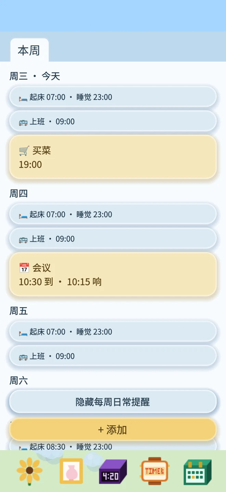
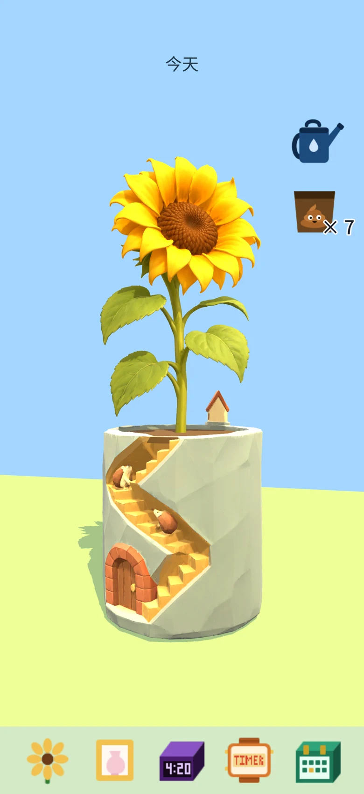
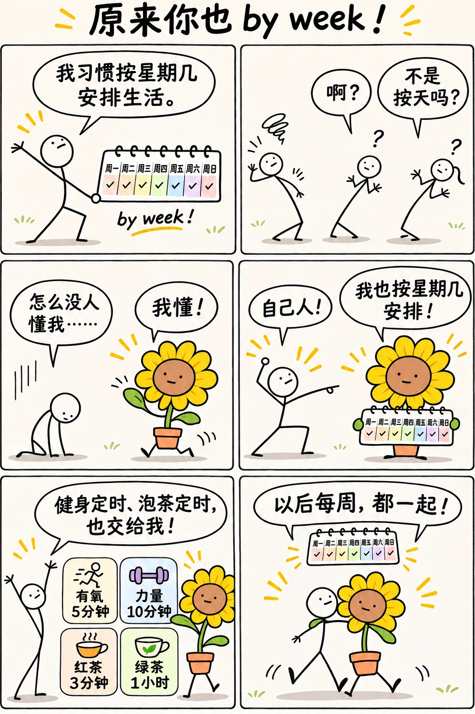
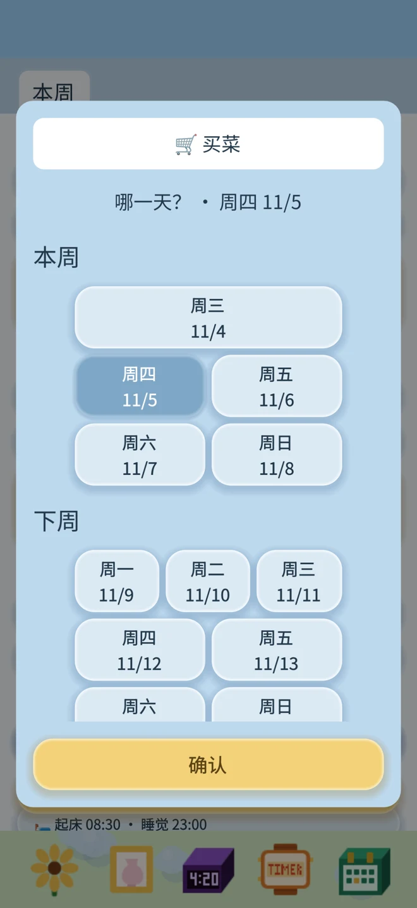
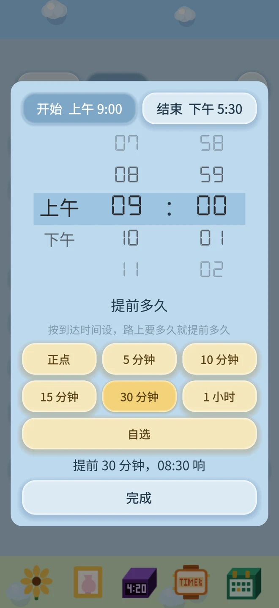
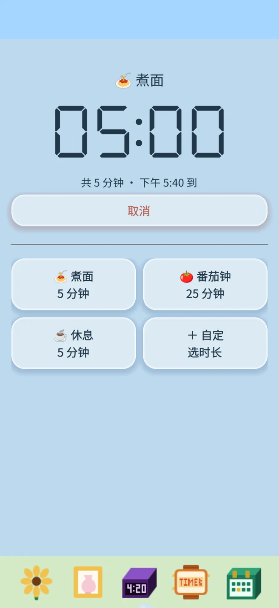

行程：每周安排与一次性提醒
本周、下周、下下周和更远的安排，分周查看。蓝色提醒每周重复，黄色提醒只响一次。
- 周一到周日，分别设置提醒时间
- 添加起床、睡觉、接娃、吃饭等每周提醒
- 暂停某个星期几，或只跳过下一次提醒
- 在行程中查看每周安排，也能添加只响一次的提醒

为习惯按「星期几做什么」安排生活的人而做。
如果你习惯按「星期几做什么」来安排生活，小小花闹钟就是为你做的。周一上班，周三接娃，周五上课，周末晚点起床——把每周几要做什么、几点提醒分别设好，让这些安排每周按时重复。临时有变化，只跳过一次，下周照常提醒。固定的每周安排和只做一次的事，都能在「行程」里一起查看。
无广告，无订阅，无需联网。完全属于你。
闹钟、提醒和养花进度保存在你的设备上。
在 App Store 下载把每天的小计划，变成陪伴你的花。挑选喜欢的花和花盆，浇浇水、轻轻点一下，看它随你的触碰摇曳。
向日葵、蝴蝶兰、君子兰、仙客来和长寿花，搭配三花猫、兔子或刺猬小屋花盆。只有向日葵会随着施肥不断长高。


本周、下周、下下周和更远的安排，分周查看。蓝色提醒每周重复，黄色提醒只响一次。



煮面、泡茶、休息，选一个计时模板，确认后开始。
也可以保存自己的名称和时长，下次继续用。

向日葵、蝴蝶兰、君子兰、仙客来和长寿花，搭配三花猫、兔子或刺猬小屋花盆。只有向日葵会随着施肥不断长高。
把水壶拖到花上就能浇水，每天浇一次就够了。太久不浇水，小花会慢慢枯萎：
蔫了别担心，浇一次水马上恢复精神。
当天的起床闹钟每贪睡一次，小花就低头一点，贪睡 3 次弯到底。第二天它又会抬起头来。往前翻日期，可以看到那天贪睡了几次。
跳过一次：只跳过最近这一次提醒，下周同一时间照常响。
暂停这一天：把某个星期几的所有提醒都停掉，直到你手动恢复。适合放假或长期不需要的日子。
所有闹钟、提醒和小花的数据只保存在你的 iPhone 上，我们不收集、也不上传任何数据。删除应用会同时删除这些数据，且无法恢复。
遇到问题或有建议，欢迎来信 💌